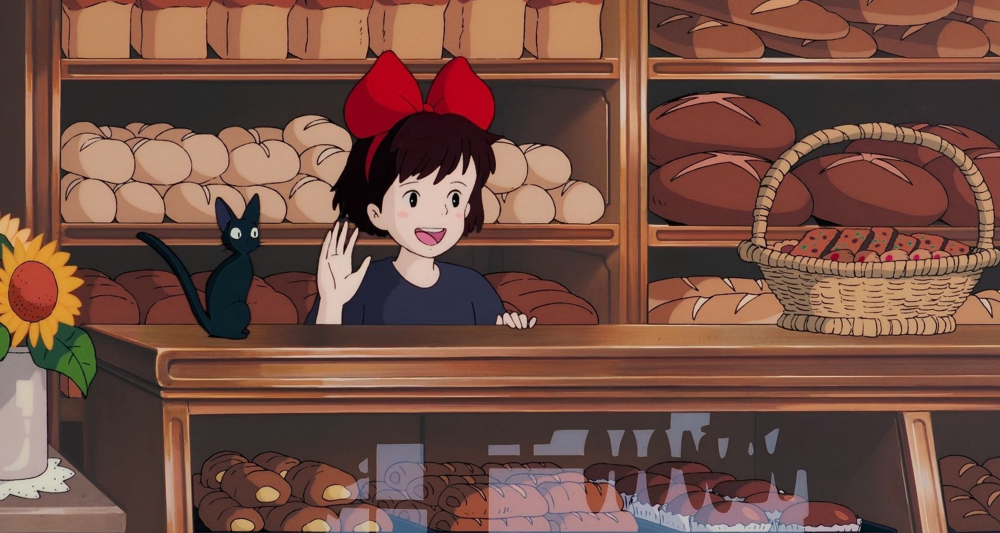
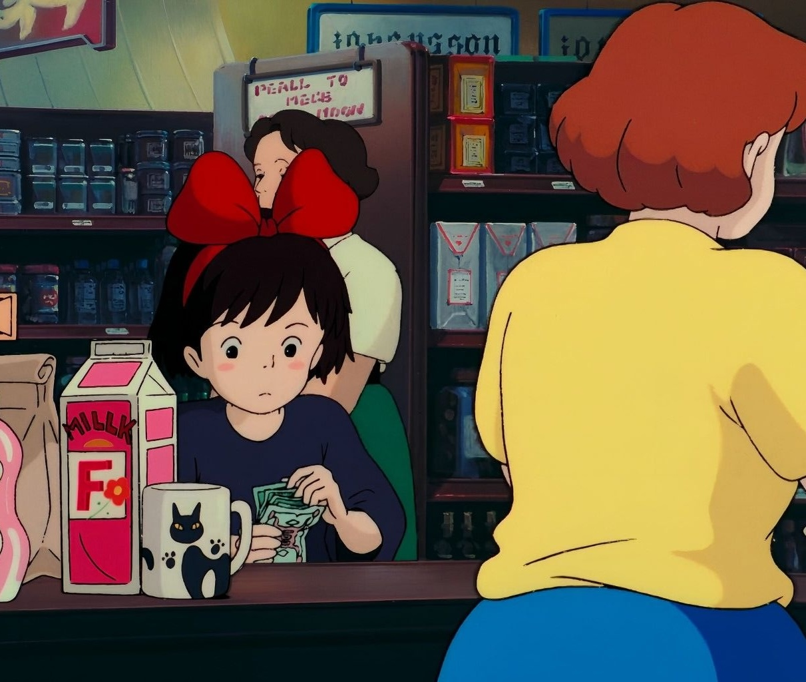
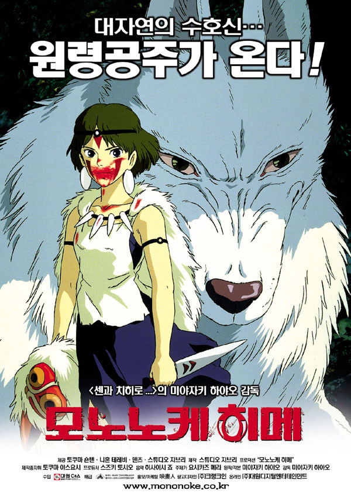

커버사진
줄거리
마을을 떠난 키키
13살의 사랑스러운 초보 마녀 ‘키키’는 마녀의 관습에 따라 검은 고양이 ‘지지’와 함께 수련을 떠난다. 가족과 마을 사람들의 배웅을 받고 마을을 떠나 비행 중 폭우가 쏟아져 항구 마을에 불시착한다.
불시착한 마을엔 자동차와 건물들이 가득하고 빗자루를 제대로 컨트롤하지 못해 자동차와 사고 날뻔하고 새로운 도시에서 첫날부터 우여곡절을 겪게된다.
항구마을에 불시착한 키키
우연히 임신한 빵집 주인, ‘오소노’를 돕게 되고 그 일을 계기로 오소노는 키키에게 숙소와 배달 받을 장소를 제공받아 물건을 배달해주는 배달(택배)일을 시작한다.
그 과정에서 키키는 마음씨 착한 오소노 아주머니, 하늘을 나는 것에 관심이 많은 소년 톰보, 자유분방한 여성 화가 우르슬라를 만나며 키키는 점점 성장해 나간다.
‘마녀배달부키키’는 스튜디오 지브리의 4번째 작품으로 카도노 에이코의 아동문화 작품인 '마녀의 특급편'을 원작으로 하여 현재는 각종 ott에서 만나볼 수 있습니다.
마녀배달부키키 메인티저
메인 예고편 보러가기
character

키키 Kiki
올해로 13살이 된 꼬마 마녀, 이제 수련을 위해 스스로 수련할 마을을 찾아 정착해야 한다. 따뜻한 마음을 가지고 있으며 씩씩하게 빗자루를 타는 능력과 검은고양이 ‘지지’의 말을 알아 들을 수 있는 능력을 가지고 있다.부모로부터 독립을 하고 항구마을에서 배달 일을 통해 여러 사람을 만나고 성장해가는 당사자이자 이 영화의 주인공이다.

오소노 Osono
키키가 새로 정착한 항구 마을에서 신서를 지는 빵집 ‘구쵸키빵’의 주인이다. 타지 사람인 키키에게 선뜻 방도 내주고 키키가 자신의 가게에서 택배를 접수 받는 것도 허락하는 마음씨가 넓은 인물이다. 만삭의 임신한 모습으로 등장하며 극 중 아이를 낳는다.
우르술라 Ursula
숲속 오두막집에 사는 19살 화가로 고양이 인형을 떨어뜨린 키키가 인형을 찾으러 갔다 만났다. 키키가 슬럼프에 빠졌을 때 찾아와 자신의 오두막으로 초대하고 함께 즐거운 시간을 보내면서 키키에게 자신의 경험과 조언을 해주고 위로를 전한다.“그리는 걸 관두지. 산책을 하거나, 경치를 구경하거나, 낮잠을 자거나, 아무것도 안해. 그러는 도중 갑자기 그려지고 싶어지는 거야.”라는 대사가 유명하다.
gallery
-

- 
-

-

poster
Japan ver
Korea ver


명대사
"키키, 너무 겉모습에만 신경쓰지 마라 중요한건 마음가짐이야
그리고 항상 웃는 얼굴 잊지 말고" - 극중 키키의 엄마 고키리 -
그리고 항상 웃는 얼굴 잊지 말고" - 극중 키키의 엄마 고키리 -
recommened movie

미야자키 하야오作

그대들은 어떻게 살 것인가
2023

센과 치히로의 행방불명
2007

모노노케 히메
2003
이웃집 토토로
2001
ENJOY in HERE!